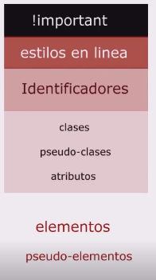
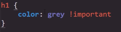

Concepto de la Espesificidad
Se trata de un concepto de gerarquia entre los estilos. CSS se trata de un lenguaje de cascada, es decir el navegador va aplicando los estilos segun los va leyedo en orden de aparición decendente en el documento CSS.
Por Ejemplo:
Se aplica un estilo a un elemento HTML, pero posteriormente se define un segundo estilo que altera algunas propiedades de este elemento, CSS como se trata de un lenguaje de cascada aplicara los primeros estilos y posteriormente sobre escribira las propiedades en conflicto al aplicar es segundo estilo, por lo tanto siempre que los estilos cuenten con la misma gerarquia se aplicara el ultimo estilo seleccionado.
Es aqui donde entra en juego la espesificidad, consiste en que segun el selector que se aplique en el estilo este podra tener mayor o menor gerarquia que otras clases, por lo tanto existe una escala gerargica en la cual mientra más gerarquia posea un tipo de selector mayor prioridad tendran los estilos que lo utilisen.
Por lo tanto pese a que se trata de un lenguaje de cascada si se utiliza un selector de alta gerarquia como por ejemplo un "id" para definir un estilo ninguno de sus atributos podran ser modificados por un estilo que aplique un selector de menor gerarquia com por ejemplo una clase.
A continuación se muestra la tabla de gerarquias CSS
Como se puede ver las gerarquias estan divididas en 5 grupos entre los cuales algunos de ellos estan conformados por diversos selectores, en estos casos estos selectores tienen la misma prioridad en CSS
Nota: los "estilos en linea" son aquellos estilos CSS definidos directamente dentro del documento HTML utilizando un elemento "style"
!Inportant
En la cima de esta tabla de selectores se encuentra un nuevo tipo de recurso, el "!important", esta opción consiste en una propiedad especial de CSS el cual puede ser incluida dentro de un estilo sin importar el que tipo de selector use, de la siguiete manera:
Dentro de la gerarquia CSS nada tiene más nivel que el !inportant por lo tanto lo que sea definido con tal no podra ser cambiado por ningun otro estilo, razon por la cual no es muy recomendable su uso salvo en casos muy marcados, ya que un mál uso de este pudiese generar errores o conflictos al diseñar una paguina.